Pandion Plots
Pandion Plots
Get started
Your first chart in five minutes.
This short guide walks you from a blank screen to a finished, grouped bar chart. Every picture below is the real thing, and the highlighted control is the one the step is about. Pick where you are working and the whole page follows; the choice sticks across every guide on this site.
1. Open the app
Go to pandionplots.com/app in any modern browser, launch the desktop app if you installed it for macOS or Windows, or double-click the portable HTML file if you downloaded one. Every way in lands on the same welcome screen.
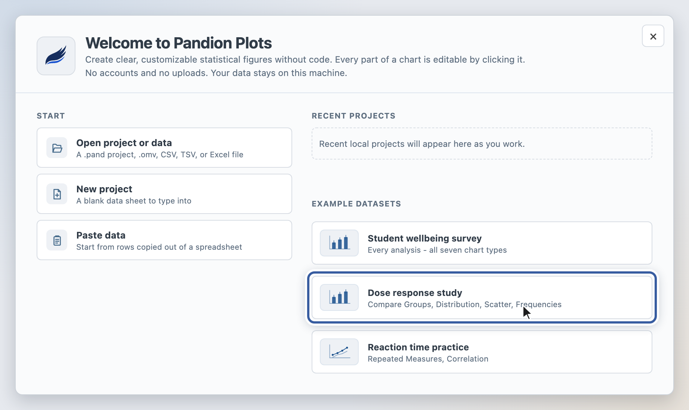
2. Get your data in
Three ways in, all from the welcome screen or the Open button. For a first pass, the example dataset is the fastest: everyone sees the same thing.
Start from an example
Click Dose response study on the welcome screen. It loads a small, tidy dataset: 24 participants, a condition each, and a score. A first chart draws itself immediately.
Or open your own file
The Open button at the top left, or Open project or data on the welcome screen, accepts a CSV, TSV, or Excel file, a jamovi .omv file, or a Pandion .pand project. Your computer’s file picker opens; choose the file and it loads.
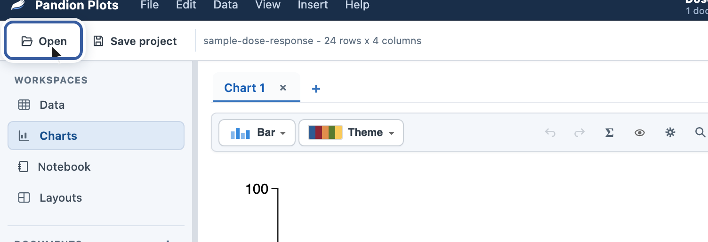
Nothing you open is uploaded anywhere. In the browser and on the desktop alike, the app runs entirely on your computer, and your data stays on it.
Check what arrived
The Data workspace on the left rail shows the table. Click any column heading to see its measure type, its levels, and its counts; this matters because chart roles accept variables by type.
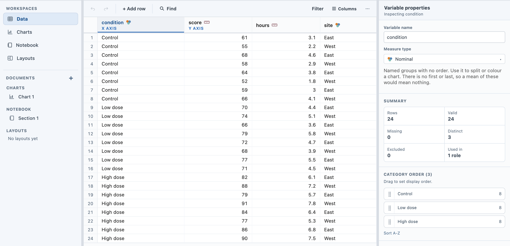
3. Make your first chart
Switch to the Charts workspace on the left rail. Building a chart is two decisions: which analysis, and which variable plays which role.
Pick the analysis
The Analysis menu at the top of the Chart setup panel picks the kind of chart. Compare Groups is the one for a numeric outcome across categories, which fits the example data.
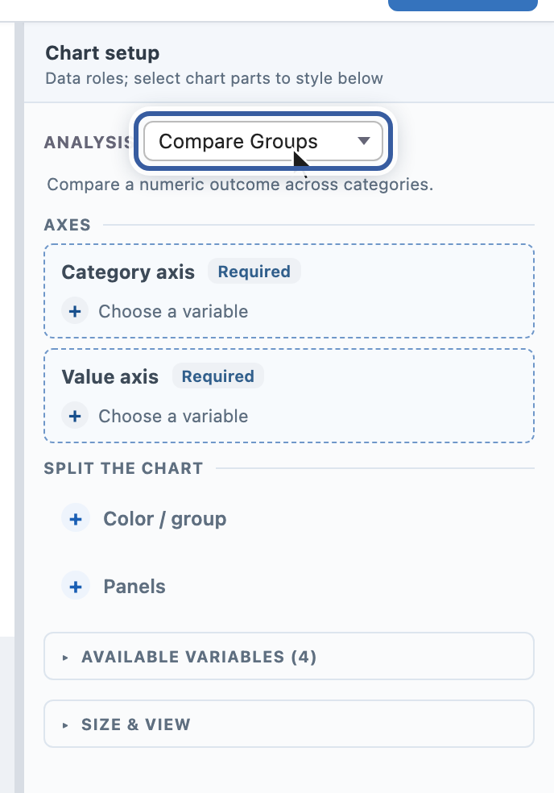
Give each role a variable
Click Choose a variable on the Category axis card. A menu opens, explains what the role accepts, and lists the variables that qualify; pick condition. Then do the same on Value axis and pick score. Dragging a variable onto a role does the same thing, if you prefer.
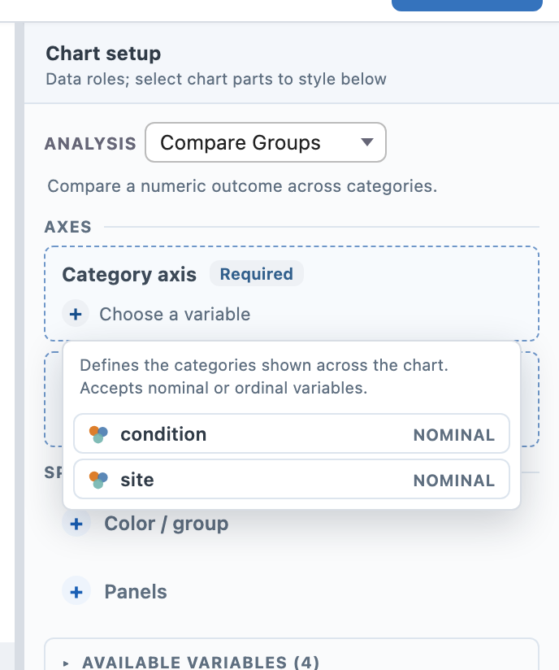
The chart draws itself
As soon as both roles are filled, the draft appears: group means with standard-error bars, labelled axes, no settings touched.
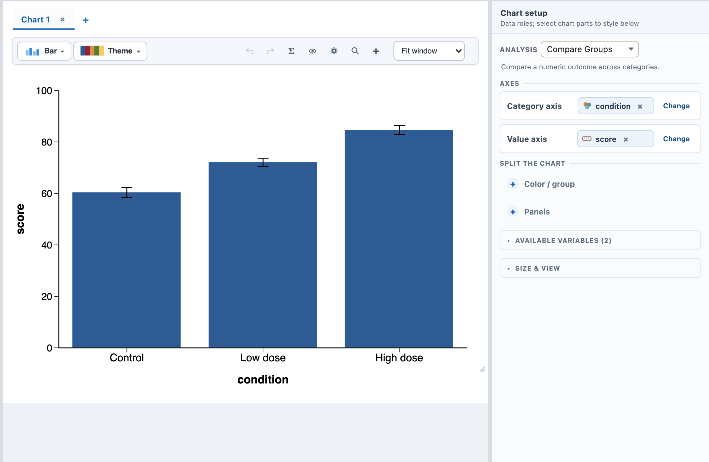
Split it by a second variable
Click + Color / group and pick site. Each condition splits into colored bars, one per site, with a legend.
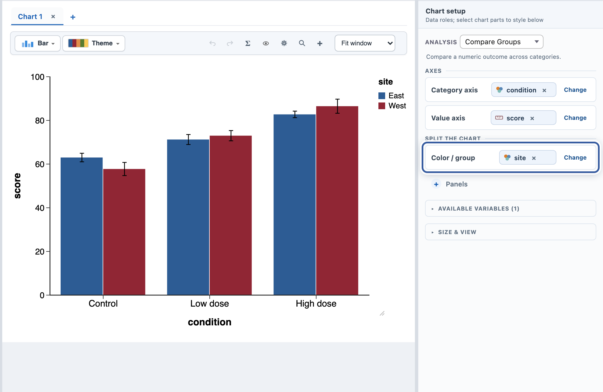
4. Make it yours
There is no settings maze. Click the thing you want to change, and its controls appear.
Click any part of the chart
Click a bar and the bar panel opens beneath the chart: color, border, pattern, error bars, spacing, order. The Applies to switch chooses between styling just the bar you clicked or all of them.
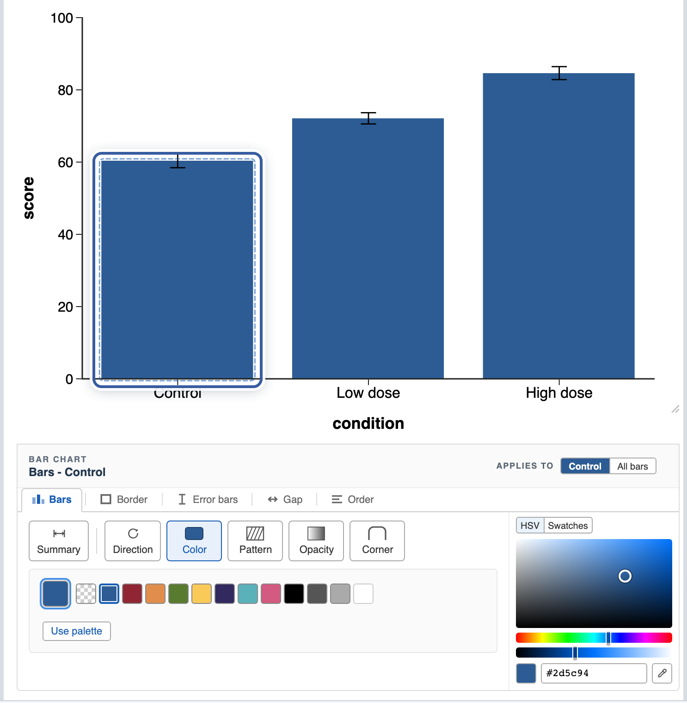
Rename an axis by clicking its title
Click the y-axis title and a text panel opens: retype the name, resize it, make it bold. This is usually the first edit a figure needs, since column names like score rarely read well on a finished figure.
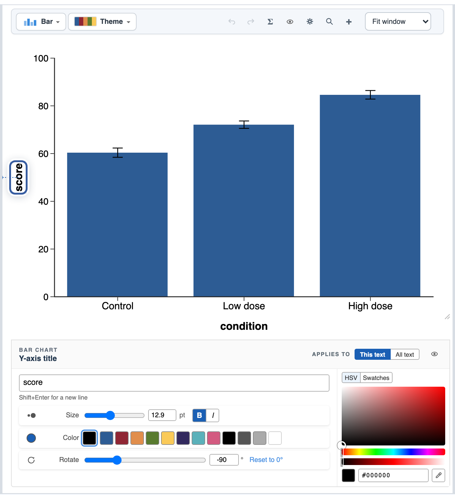
Change every color at once
The Theme button above the chart swaps the whole palette: the built-in Pandion colors, two colorblind-safe sets, classic qualitative palettes, and sequential ramps.
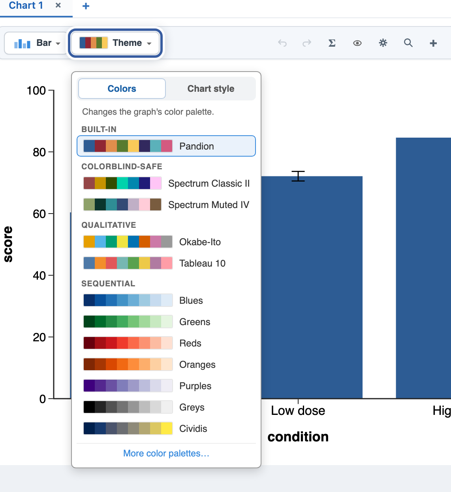
5. Save your work and export the figure
Two different acts: saving keeps your project editable, exporting produces the finished image for a paper or an assignment.
Save the project
Save project writes a .pand file: your data, every chart, and every edit. It reopens through the same Open button, and in the desktop app a double-click on the file opens it too. The app also autosaves as you work, but the file is the copy you can keep, move, or hand in.
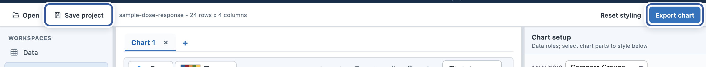
Export the figure
Export chart opens the export dialog: SVG or PDF for vector output that stays sharp in a manuscript, PNG or JPG for slides and documents, with print resolution, an optional caption, and an image description for accessibility that SVG embeds directly.
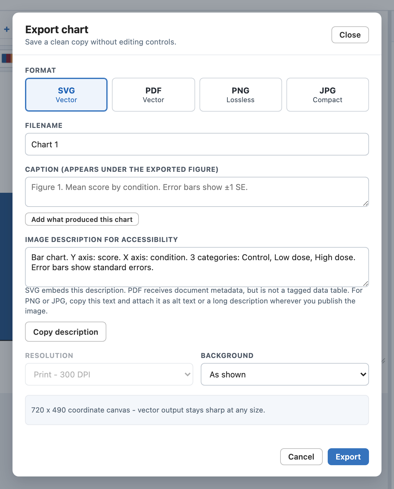
That is the whole loop: data in, roles assigned, chart drawn. The natural next step is From chart to conclusion, which adds error bars you can defend, pairwise tests, and significance brackets to this same chart; the other guides go deeper still. For reference, the user guide documents every control, and the gallery shows the defaults across all seven analyses.
Teaching with Pandion? Link this page directly from your assignment; it has no account walls and prints cleanly if you want a paper handout.
1. Install the module
Download the module file from the downloads page, then in jamovi open the Modules menu (the plus at the top right), choose jamovi library, and use the sideload arrow at the top of that panel to install the downloaded .jmo file. A new Pandion Plots button appears on the Plots ribbon tab, and it stays after you restart jamovi.
2. Open your data
Open a CSV, Excel file, or .omv exactly as you always do in jamovi (the ☰ menu, then Open). This guide uses a small dose-response study; download the same CSV if you want to follow along click for click.
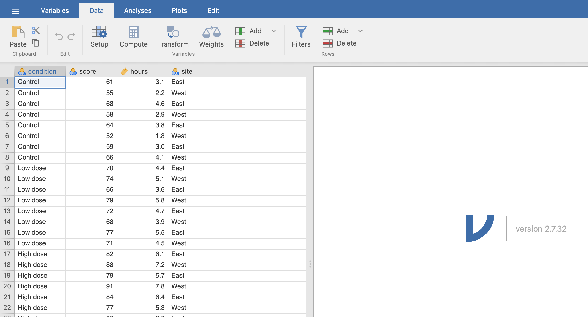
3. Check your measure types
The one jamovi habit worth knowing: columns of whole numbers, like a test score, often import as Nominal rather than Continuous, and a chart cannot treat a nominal column as numbers. Double-click the column heading and set Measure type to Continuous.
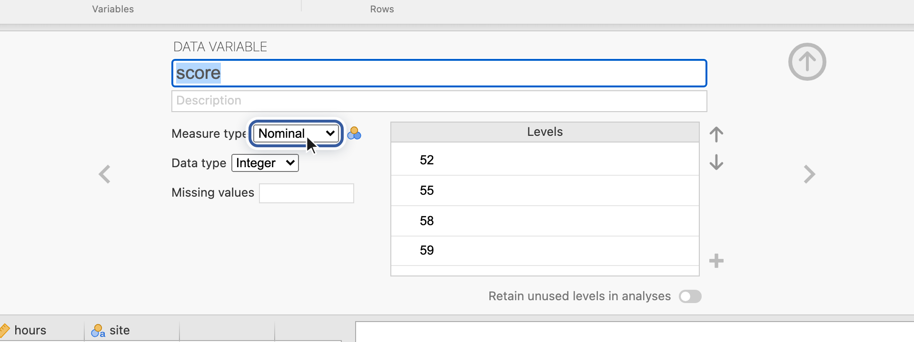
4. Make your first chart
The module lives on the Plots ribbon tab.
Pick the analysis
On the Plots tab, click Pandion Plots and choose Compare Groups: a numeric outcome across categories. The menu lists all seven chart analyses, and Help Me Choose at the bottom asks a few questions and recommends one when you are not sure.
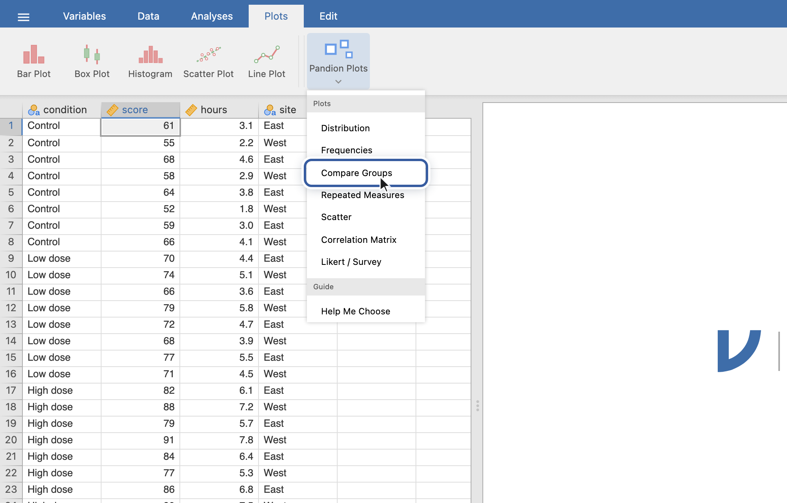
Assign the variables
The options panel opens on the left, jamovi style: move condition to X-Axis Variable and score to Y-Axis Variable. The chart draws in the results as soon as both are set: group means with standard-error bars, labelled axes, no settings touched.
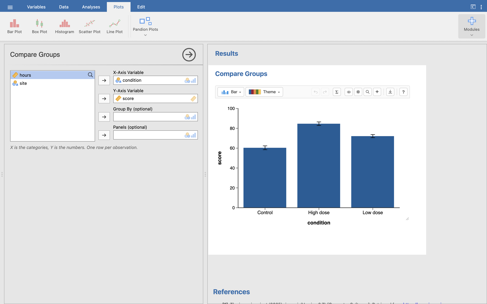
Split it by a second variable
Move site into Group By (optional). Each condition splits into colored bars, one per site, with a legend.
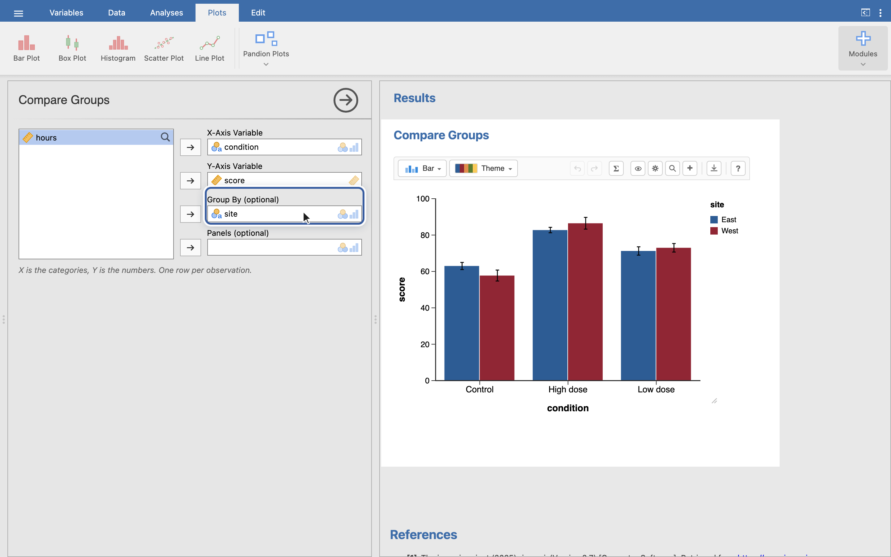
5. Make it yours
There is no settings maze. Click the thing you want to change, right in the results, and its controls appear.
Click any part of the chart
Click a bar and the bar panel opens beneath the chart: color, border, pattern, error bars, spacing, order. The Applies to switch chooses between styling just the bar you clicked or all of them. The same rule covers axes, titles, error bars, the legend, and every other part: click it, edit it.
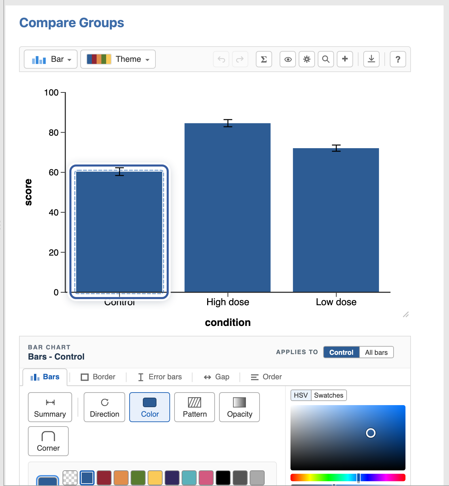
Rename an axis by clicking its title
Click the y-axis title and a text panel opens: retype the name, resize it, make it bold. Column names like score rarely read well on a finished figure, so this is usually the first edit worth making.
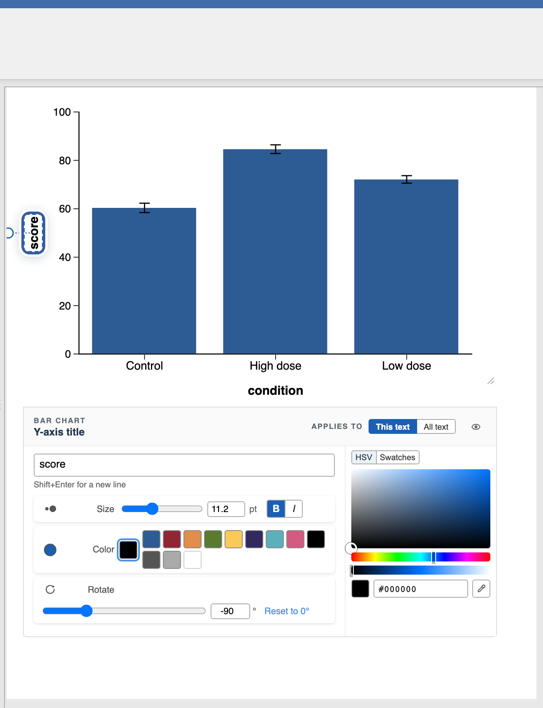
Change every color at once
The Theme button above the chart swaps the whole palette: the built-in Pandion colors, two colorblind-safe sets, classic qualitative palettes, and sequential ramps.
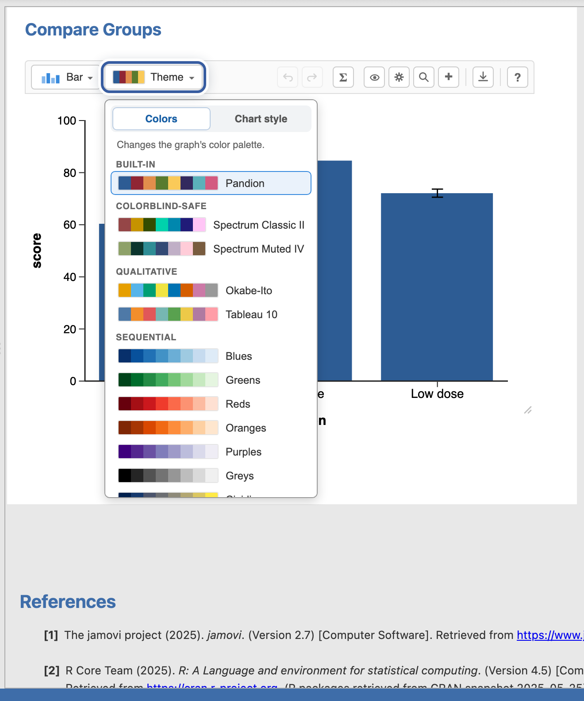
6. Save and export
Saving the jamovi file keeps everything: your .omv stores the data, the analysis, and every chart edit, and reopens ready to keep working, even on a machine without the module for viewing.
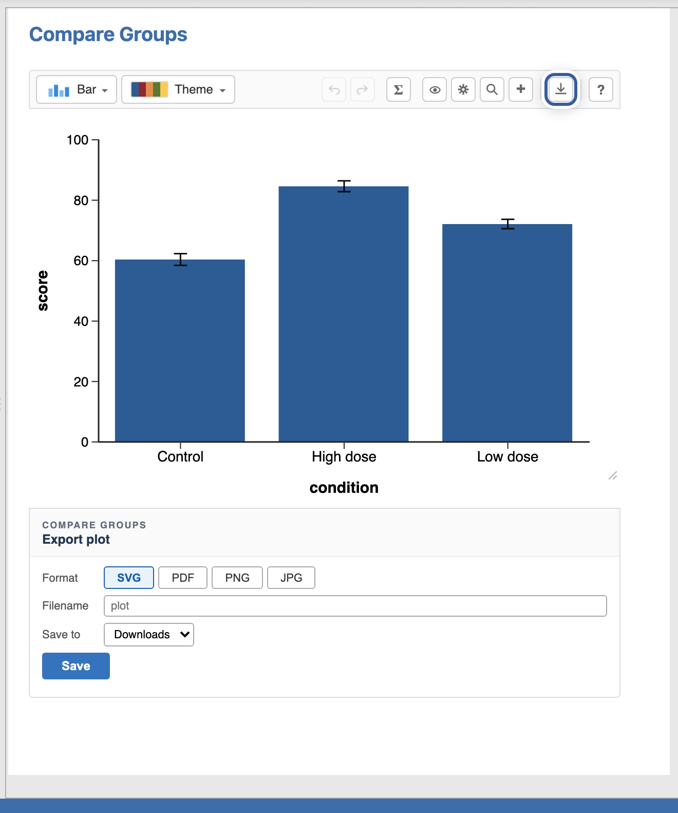
That is the whole loop in jamovi: install once, open data, check types, pick an analysis, and refine by clicking. The natural next step is From chart to conclusion (the chart editor is the same one, so it applies in jamovi as written); the other guides go deeper still. The user guide covers every control in depth, the gallery shows the defaults across all seven analyses.
Teaching with jamovi? Link this page from your assignment; it prints cleanly if you want a paper handout.